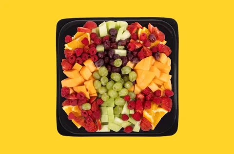
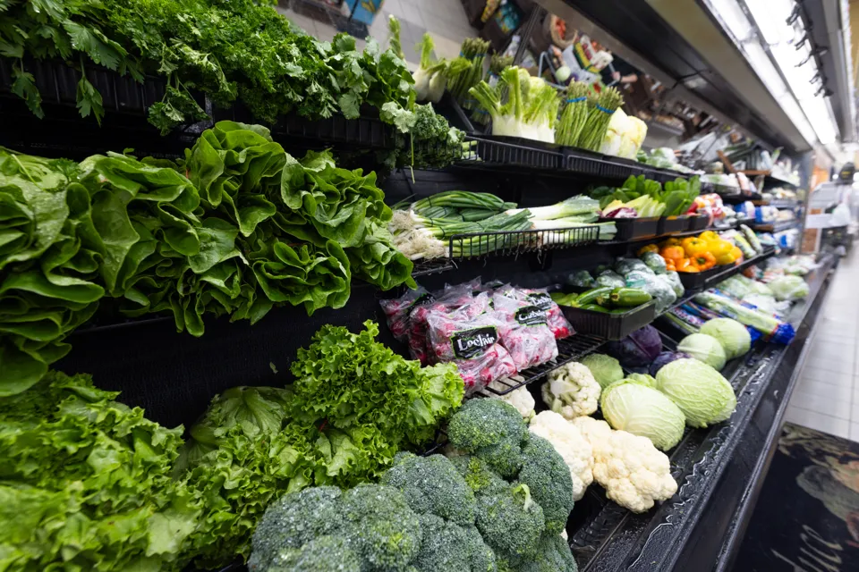
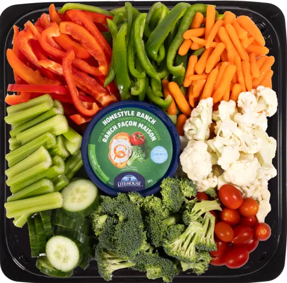

L’explosion de fruits
Melon miel, cantaloup, raisins rouges et verts, fraises, framboises et oranges.
10 à 12 personnes
De la couleur, chaque jour
Des commandes reçues et des produits inspectés chaque jour, avec une sélection qui évolue au fil des saisons.


La meilleure fraîcheur possible
Nous recevons une commande chaque jour et inspectons tous nos fruits et légumes quotidiennement pour vous offrir la meilleure fraîcheur possible.
Nous préparons aussi des plateaux de fruits et de légumes pour vos occasions spéciales, rencontres et fêtes.
Pour recevoir simplement
Commandez au moins 48 h à l’avance. Les portions sont indicatives; confirmez les quantités et les prix avec le marché.
Prix publiés sur le site officiel, vérifiés le 25 octobre 2026, en dollars canadiens. Prix, ingrédients, portions et disponibilité à confirmer avec le marché.